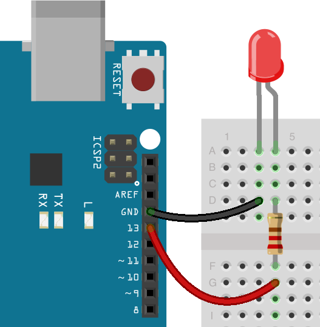

Introduction to Programming, Arduino, and C++
Introduction
What is Programming?
Programming is the process of writing instructions that a computer or microcontroller can understand and execute. These instructions are written in a programming language, which allows humans to communicate with machines. Programming enables us to automate tasks, solve problems, and create interactive systems like robots, websites, and applications.
Why Learn Arduino and C++?
- Arduino provides an easy way to interact with hardware like sensors, motors, and lights. It allows you to build projects without needing advanced electronics knowledge.
- C++ is the programming language used to write Arduino programs. It is widely used in robotics, game development, and high-performance computing. By learning C++, students gain skills that apply to both Arduino and other areas of software development.
Introduction to Arduino
What is Arduino?
Arduino is an open-source electronics platform that includes programmable circuit boards (microcontrollers) and software (Arduino IDE). It allows users to build projects that interact with the physical world, such as robots, weather stations, and automated systems. The Arduino board can read inputs (like button presses or sensor data) and control outputs (like LEDs, motors, or displays).
What is C++?
C++ is a powerful, high-performance programming language used for systems programming, game development, and embedded systems. The Arduino programming language is based on a simplified version of C++, making it an excellent introduction to the language while allowing for advanced functionality.
Installing Arduino IDE
The Arduino IDE (Integrated Development Environment) is the software used to write and upload code to an Arduino board. It includes a code editor, a compiler, and a tool to transfer code to the board.
Download the Arduino IDE from the official website:
Arduino Software Download
Introduction to C++ for Arduino
Basic Structure
C++ programs for Arduino follow a structured format with two essential functions:
- setup(): Runs once when the Arduino is powered on or reset. It is used to initialize settings like pin modes.
- loop(): Runs repeatedly after setup(). It contains the main logic of your program.
void setup() {
// Runs once when powered on or reset
}
void loop() {
// Runs continuously after setup()
}Variables and Data Types
Variables store values that can be used and modified in a program. In Arduino, we use different data types depending on the type of value being stored.
| Data Type | Description | Example |
|---|---|---|
int |
Stores whole numbers (positive or negative) | int ledPin = 13; |
float |
Stores decimal numbers | float voltage = 3.7; |
bool |
Stores true or false values |
bool isOn = true; |
char |
Stores a single character | char letter = 'A'; |
String |
Stores a sequence of characters (text) | String message = "Hello, Arduino!"; |
int ledPin = 13; // Integer variable to store pin numberConstants
Constants are variables whose values never change throughout the program. They are useful for defining fixed values like pin numbers or speed limits.
const int MAX_SPEED = 255; // Maximum motor speedUsing const prevents accidental changes to values that should remain the same, improving code
readability and safety.
Basic Arduino Functions
Digital Output
In Arduino, digital output is used to control components like LEDs, motors, and buzzers by sending either a HIGH (ON) or LOW (OFF) signal.
The following example program demonstrates how to turn an LED on and off at regular intervals.
int led = 13; // Declare a variable for the LED pin
void setup() {
pinMode(led, OUTPUT); // Set pin 13 as an output
}
void loop() {
digitalWrite(led, HIGH); // Turn LED ON
delay(1000); // Wait for 1 second (1000ms)
digitalWrite(led, LOW); // Turn LED OFF
delay(500); // Wait for 0.5 seconds (500ms)
}Breaking Down the Code:
int led = 13;→ Declares a variable namedledand assigns it the value **13**, which is the built-in LED pin on most Arduino boards.void setup()→ This function runs **once** when the board is powered on or reset.pinMode(led, OUTPUT);→ Configures pin **13** as an **output**, meaning it can send signals to control components.void loop()→ This function runs **continuously**, creating a repeating cycle of instructions.digitalWrite(led, HIGH);→ Turns the LED **ON** by sending a **HIGH (5V)** signal.delay(1000);→ Pauses the program for **1000 milliseconds (1 second)**.digitalWrite(led, LOW);→ Turns the LED **OFF** by sending a **LOW (0V)** signal.delay(500);→ Pauses the program for **500 milliseconds (0.5 seconds)** before repeating.
By adjusting the values inside the delay() functions, you can change how fast the LED blinks. Try
different values to see the effect!